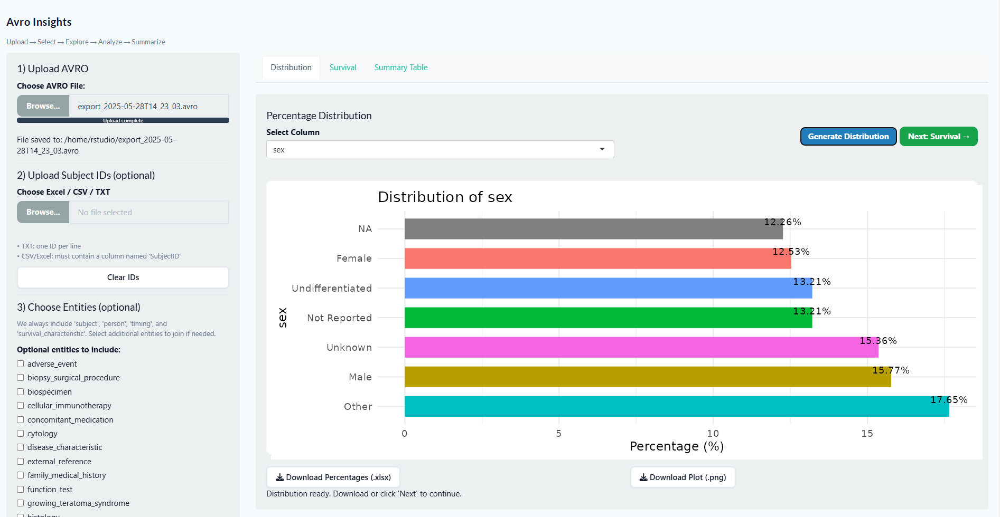

Project Information
Overview
Dockerized R/Shiny Application for PFB AVRO Biomedical Data Analysis
This project provides a Dockerized RStudio-based Shiny application for analyzing biomedical data stored in
AVRO files using the Portable Format for Biomedical (PFB) standard. The system leverages Apache Spark to read
and process large AVRO files, flattening complex hierarchical structures into tidy
tabular formats for downstream analysis.
Users can explore entities and observation nodes, generate percentage distributions, and perform survival
analyses (Kaplan–Meier). A configurable Table-1 feature allows the selection of covariates and statistical
comparisons when grouping is applied. Outputs (Excel, PNG) are download ready for reporting.
Workflow
Users upload a file in the PFB AVRO format. Valid files expose available entities, while invalid files
generate an error. Core entities such as
person, subject, timing,
and survival_characteristics are included by default, as they are required for
survival analysis (OS and EFS curves). Additional entities may also be selected by the user.

Example: nested AVRO structure before flattening.
The application flattens nested records into a tidy table, preserves relationships, and merges entity-level
information to create a single dataset that can be further used for analysis.

Example: flattened and merged data for further processing.
Percentage Distribution
After flattening, all categorical variables are displayed in a dropdown. Users can select variables to compute
percentage distributions and download the results as Excel or PNG.

Example: distribution visualization (exportable).
Survival Curves
Overall Survival
Overall survival uses diagnosis and last-known survival status outcomes from
survival_characteristics.
Kaplan–Meier estimators are applied to generate survival plots and downloadable PNGs with risk tables.

Event-Free Survival
Event-free survival uses censoring status and event timing information (from
subject and timing) to compute survival curves.

Table-1 Analysis
Users can select covariates and variable types to create Table 1. Numeric variables display mean, median, and
percentage of missing values, while categorical variables display counts, percentages, and missing values.
When a subject ID grouping file is uploaded, two groups are generated (IDs in the file vs. remaining
subjects), and p-values are computed where appropriate.
Users can clear the calculation and perform another grouping, or perform a single grouping. Survival analysis
can also be applied to the uploaded subject IDs.

Interactive Table-1 output (example).

Interactive Table-1 output (single grouping).
Interactive Table-1 output (grouping + p-value).